【2月10日(三) 17:00圖片更新】
◆「情人節2021Pick Up召喚(每日交替)」期間◆
期間:2021年2月10日(三) 17:00～2月24日(三) 11:59
舉辦期間限定「情人節2021Pick Up召喚(每日交替)」！
舉辦只限女性從者做為對象的「情人節2021Pick Up1召喚(每日交替)」「情人節2021Pick Up2召喚(每日交替)」2種召喚。
「情人節2021Pick Up1召喚(每日交替)」及「情人節2021Pick Up2召喚(每日交替)」中從期間限定活動「愛的傳教士埃莫醬的聖瓦倫蒂諾！ ～迦勒底・苦澀・情人節2021～」關聯從者之中，包含1位新登場從者的下述從者Pick Up！
※2月10日(三) 17:00更新
※請注意「情人節2021Pick Up1召喚(每日交替)」與「情人節2021Pick Up2召喚(每日交替)」的獎勵召喚計算，是各自分別計算的。
※請注意「情人節2021Pick Up1召喚(每日交替)」與「情人節2021Pick Up2召喚(每日交替)」舉辦期間不同。
| 「情人節2021Pick Up1召喚(每日交替)」舉辦期間 |
|---|
▼期間限定從者
【常駐Pick Up】
・★5(SSR)卡蓮・Ｃ・奧爾黛西亞(埃莫〔卡蓮〕)
【2月10日(三) 17:00追記】
埃莫〔卡蓮〕進行靈基再臨的話，卡面名稱會變成卡蓮・C・奧爾黛西亞。
▼Pick Up從者
【每日交替Pick Up】
・★5(SSR)阿提拉(Saber)
・★5(SSR)阿爾托莉亞・潘德拉剛(Saber)
・★5(SSR)俄里翁
・★5(SSR)阿爾托莉亞・潘德拉剛(Lancer)
・★5(SSR)弗栗多
・★5(SSR)歐羅巴
・★5(SSR)魁札爾・科亞特爾(Rider)
・★5(SSR)安娜塔西亞
・★5(SSR)刑部姬(Assassin)
・★5(SSR)南丁格爾(Berserker)
・★5(SSR)志度內
| 「情人節2021Pick Up2召喚(每日交替)」舉辦期間 |
|---|
▼期間限定從者
【常駐Pick Up】
・★5(SSR)卡蓮・Ｃ・奧爾黛西亞(埃莫〔卡蓮〕)
【2月10日(三) 17:00追記】
埃莫〔卡蓮〕進行靈基再臨的話，卡面名稱會變成卡蓮・C・奧爾黛西亞。
▼Pick Up從者
【每日交替Pick Up】
・★5(SSR)狄奧斯庫洛伊
・★5(SSR)莫德雷德(Saber)
・★5(SSR)布拉達曼特
・★5(SSR)女王梅芙(Rider)
・★5(SSR)弗朗西斯・德雷克
・★5(SSR)玄奘三藏
・★5(SSR)雪赫拉莎德(不夜城的Caster)
・★5(SSR)玉藻前(Caster)
・★5(SSR)開膛手傑克
・★5(SSR)貞德(Ruler)
・★5(SSR)吉娜可＝加里吉利(偉大石像神)
另外，下述的期間限定概念禮裝常駐Pick Up！
【常駐Pick Up】
・★5(SSR)クック・ハート
・★4(SR)ビター・ジュエル
・★3(R)ディア・フレンド
裝備上述3種概念禮裝的話，在期間限定活動「愛的傳教士埃莫醬的聖瓦倫蒂諾！ ～迦勒底・苦澀・情人節2021～」中會提升活動道具的掉落獲得數。
※2月10日(三) 17:00更新
Pick Up期間中，Pick Up對象從者與概念禮裝的出現機率提升！
詳情請在聖晶石召喚畫面左下的召喚詳細確認。
11次召喚中確定1張★4(SR)以上和確定1位★3(R)以上的從者！ ※確定★4(SR)以上包含從者和概念禮裝。 ※本頁面皆為開發中圖片。會有與實際圖片相異的情況。
◆有關從者的注意◆
※除了性別「女性」的從者外，下述的從者也包含在抽出對象。
・★5(SSR)狄奧斯庫洛伊
・★5(SSR)恩奇杜
・★4(SR)夏爾・德翁
・★4(SR)阿斯托爾福(Rider)
※請注意本召喚做為每日交替，下述的從者就算舉辦期間中也有不會被抽出來的日子。
・★5(SSR)阿爾托莉亞・潘德拉剛(Lancer)
・★5(SSR)魁札爾・科亞特爾(Rider)
・★5(SSR)女王梅芙(Rider)
・★5(SSR)志度內
※下述的從者在Pick Up期間結束後不會追加到故事召喚。
・★5(SSR)卡蓮・Ｃ・奧爾黛西亞(埃莫〔卡蓮〕)
※本召喚的Pick Up期間中，透過故事進行所追加的下述從者就算通過各章前也能入手。
・★5(SSR)阿爾托莉亞・潘德拉剛(Lancer)
・★5(SSR)魁札爾・科亞特爾(Rider)
・★5(SSR)女王梅芙(Rider)
・★5(SSR)志度內
※下述的從者在Pick Up期間結束後仍會在故事召喚被抽出。
・每日交替Pick Up對象★5(SSR)女性從者
・★5(SSR)狄奧斯庫洛伊
※關於隱藏真名尚未判明的從者，透過主線關卡的進行會讓從者及一部份寶具的名稱變化。
◆有關從者真名的注意◆
埃莫〔卡蓮〕進行靈基再臨的話，卡面名稱會變成卡蓮・C・奧爾黛西亞。(2/10 17:00追記)
在2018年12月31日(二) 23:00以後新配信的主線故事及期間限定活動、一部份關卡、宣傳活動及召喚中，會顯示隱藏真名的對象從者真名。
※2018年12月31日(一) 22:59前已經配信的主線故事、復刻活動、一部份關卡中不在此限。
※「★5(SSR)吉娜可＝加里吉利(偉大石像神)」是「★5(SSR)偉大石像神」到靈基再臨第2階段的話名稱會變成「★5(SSR)吉娜可＝加里吉利」。
◆有關概念禮裝的注意◆
※下述的概念禮裝，Pick Up期間中也能靠友情點數召喚獲得。
・★3(R)ディア・フレンド
※在自動變還設定登錄★3(R)概念禮裝的情況，下述的概念禮裝會變成自動變還的對象。
・★3(R)ディア・フレンド
◆「情人節2021Pick Up召喚(每日交替)」Pick Up內容◆
※2月10日(三) 17:00圖片更新
埃莫〔卡蓮〕進行靈基再臨的話，卡面名稱會變成卡蓮・C・奧爾黛西亞。
| Pick Up期間 | ||||
|---|---|---|---|---|
| Pick Up內容 | ||||
| 全天Pick Up | 每日交替Pick Up | |||
|
2/10(三) 17:00～ 2/11(四) 22:59 |

|
★5 卡蓮・Ｃ・奧爾黛西亞(埃莫〔卡蓮〕) | - | |
| 2/11(四) 23:00～2/12(五) 22:59 | ★5 阿提拉(Saber) | |||
| 2/12(五) 23:00～2/13(六) 22:59 | ★5 俄里翁 | |||
| 2/13(六) 23:00～2/14(日) 22:59 | ★5 阿爾托莉亞・潘德拉剛(Lancer) | |||
| 2/14(日) 23:00～2/15(一) 22:59 | ★5 歐羅巴 | |||
| 2/15(一) 23:00～2/16(二) 22:59 | ★5 安娜塔西亞 | |||
| 2/16(二) 23:00～2/17(三) 22:59 | ★5 刑部姬(Assassin) | |||
| 2/17(三) 23:00～2/18(四) 22:59 | ★5 南丁格爾(Berserker) | |||
| 2/18(四) 23:00～2/19(五) 22:59 | ★5 志度內 | |||
| 2/19(五) 23:00～2/20(六) 22:59 | ★5 阿爾托莉亞・潘德拉剛(Saber) | |||
| 2/20(六) 23:00～2/21(日) 22:59 | ★5 弗栗多 | |||
| 2/21(日) 23:00～2/22(一) 22:59 | ★5 魁札爾・科亞特爾(Rider) | |||
|
2/22(一) 23:00～ 2/24(三) 11:59 |
- | |||
※2月10日(三) 17:00更新
埃莫〔卡蓮〕進行靈基再臨的話，卡面名稱會變成卡蓮・C・奧爾黛西亞。
※請注意會以每日交替變更Pick Up的從者。
| Pick Up期間 | ||||
|---|---|---|---|---|
| Pick Up內容 | ||||
| 全天Pick Up | 每日交替Pick Up | |||
| 2/11(四) 23:00～2/12(五) 22:59 |
|
★5 卡蓮・Ｃ・奧爾黛西亞(埃莫〔卡蓮〕) | ★5 玄奘三藏 | |
| 2/12(五) 23:00～2/13(六) 22:59 | ★5 開膛手傑克 | |||
| 2/13(六) 23:00～2/14(日) 22:59 | ★5 貞德(Ruler) | |||
| 2/14(日) 23:00～2/15(一) 22:59 | ★5 狄奧斯庫洛伊 | |||
| 2/15(一) 23:00～2/16(二) 22:59 | ★5 布拉達曼特 | |||
| 2/16(二) 23:00～2/17(三) 22:59 | ★5 女王梅芙(Rider) | |||
| 2/17(三) 23:00～2/18(四) 22:59 | ★5 玉藻前(Caster) | |||
| 2/18(四) 23:00～2/19(五) 22:59 | ★5 吉娜可＝加里吉利(偉大石像神) | |||
| 2/19(五) 23:00～2/20(六) 22:59 | ★5 莫德雷德(Saber) | |||
| 2/20(六) 23:00～2/21(日) 22:59 |

|
★5 弗朗西斯・德雷克 | ||
| 2/21(日) 23:00～2/22(一) 22:59 | 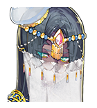 | ★5 雪赫拉莎德(不夜城的Caster) | ||
※2月10日(三) 17:00圖片更新
埃莫〔卡蓮〕進行靈基再臨的話，卡面名稱會變成卡蓮・C・奧爾黛西亞。
※「★5(SSR)吉娜可＝加里吉利(偉大石像神)」是「★5(SSR)偉大石像神」到靈基再臨第2階段的話名稱會變成「★5(SSR)吉娜可＝加里吉利」。 ※請注意會以每日交替變更Pick Up的從者。

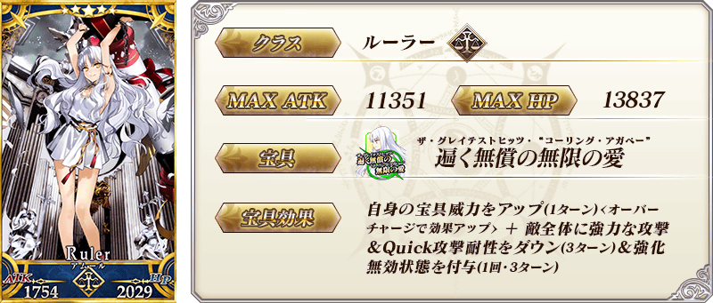
※2月10日(三) 17:00圖片更新
埃莫〔卡蓮〕進行靈基再臨的話，卡面名稱會變成卡蓮・C・奧爾黛西亞。

| 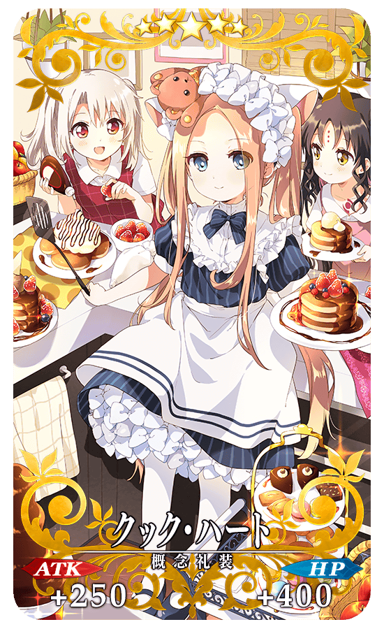 |
★★★★★SSR
|

| 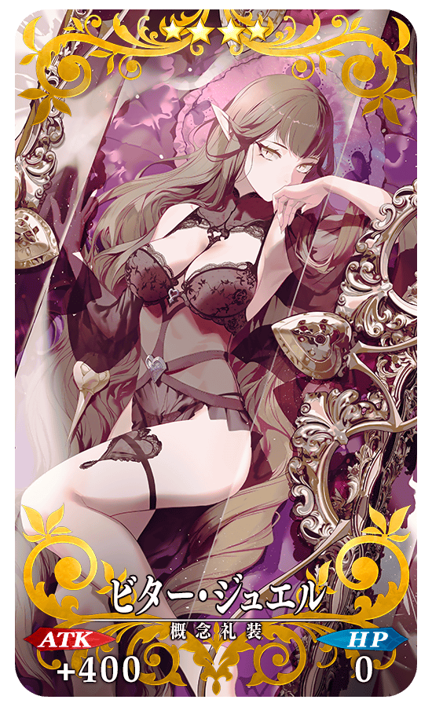 |
★★★★SR |
| 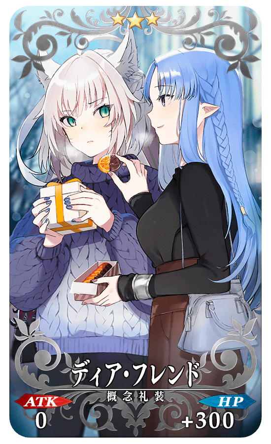 |
★★★R |
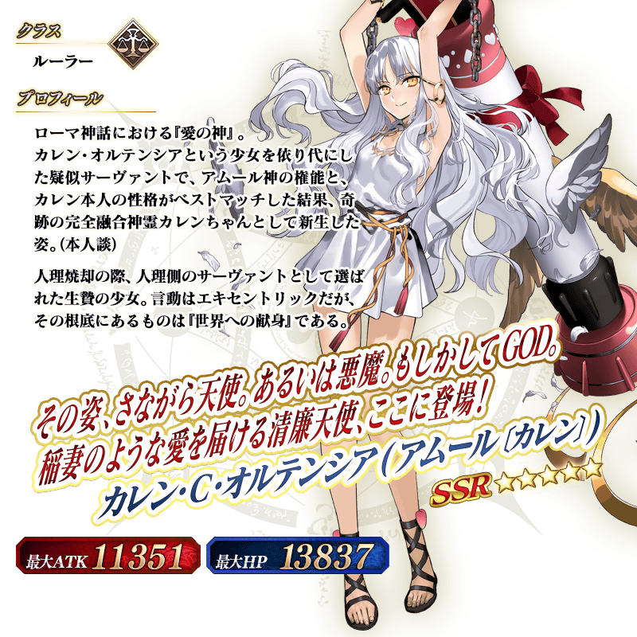
※2月10日(三) 21:00圖片更新
埃莫〔卡蓮〕進行靈基再臨的話，卡面名稱會變成卡蓮・C・奧爾黛西亞。
介紹★5(SSR)卡蓮・Ｃ・奧爾黛西亞(埃莫〔卡蓮〕)的寶具演出！
★5(SSR)卡蓮・Ｃ・奧爾黛西亞(埃莫〔卡蓮〕)的寶具演出於一部份裝置有對應全螢幕顯示。
在「Fate/Grand Order」官方網站內的公告中，以影片公開寶具演出，敬請確認。
※2月10日(三) 17:00更新
埃莫〔卡蓮〕進行靈基再臨的話，卡面名稱會變成卡蓮・C・奧爾黛西亞。

【2月16日(二) 17:00追記】
「★5(SSR)卡蓮・Ｃ・奧爾黛西亞(埃莫〔卡蓮〕)」的靈衣開放權做為期間限定活動「愛的傳教士埃莫醬的聖瓦倫蒂諾！ ～迦勒底・苦澀・情人節2021～」的報酬登場！
通過本活動的主線關卡後，可入手上述靈衣開放權做為活動道具交換的報酬。
另外，「★5(SSR)卡蓮・Ｃ・奧爾黛西亞(埃莫〔卡蓮〕)」的靈衣開放權，會在本活動的活動道具交換期間結束後追加到達文西工房的「稀有稜鏡交換」。
可用稀有稜鏡2個交換入手上述靈衣開放權。
想要靈衣開放的話，除了靈衣開放權外必須再加上一些開放條件。
◆追加時間◆
2021年3月3日(三) 17:00～(預定)
※追加到「稀有稜鏡交換」的「★5(SSR)卡蓮・Ｃ・奧爾黛西亞(埃莫〔卡蓮〕)」的靈衣開放權為永久，沒有交換期限。
◆交換條件◆
滿足以下條件的御主才能交換
・通過「特異點F 炎上汙染都市 冬木」
・未入手「★5(SSR)卡蓮・Ｃ・奧爾黛西亞(埃莫〔卡蓮〕)」的靈衣開放權
◆有關靈衣開放權的注意◆
※本次追加的「★5(SSR)卡蓮・Ｃ・奧爾黛西亞(埃莫〔卡蓮〕)」的簡易靈衣會配合外觀變化一部份語音。
※請注意未持有「★5(SSR)卡蓮・Ｃ・奧爾黛西亞(埃莫〔卡蓮〕)」的情況，可入手靈衣開放權。但無法進行靈衣開放。
◆追加道具(永久)◆
| 追加道具 | 能交換次數 | 1次交換所需的 稀有稜鏡數 |
|---|---|---|
| 「★5(SSR)卡蓮・Ｃ・奧爾黛西亞(埃莫〔卡蓮〕)」的靈衣開放權 | 1次 | 2個 |


「靈衣開放」是自強化畫面進行。
※「靈衣開放」後會自動切換戰鬥角色和圖示。若想回到「靈衣開放」前的狀態和變成其他再臨階段的情況，可自從者詳細畫面變更。 ※進行「靈衣開放」不會讓職階和能力等有所變化。
 ※上述「★5(SSR)阿提拉(Saber)」的立繪為靈基再臨第1階段。
※上述「★5(SSR)阿提拉(Saber)」的立繪為靈基再臨第1階段。
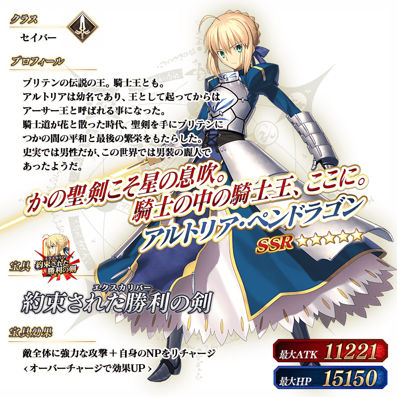 ※上述「★5(SSR)阿爾托莉亞・潘德拉剛(Saber)」的立繪為靈基再臨第1階段。

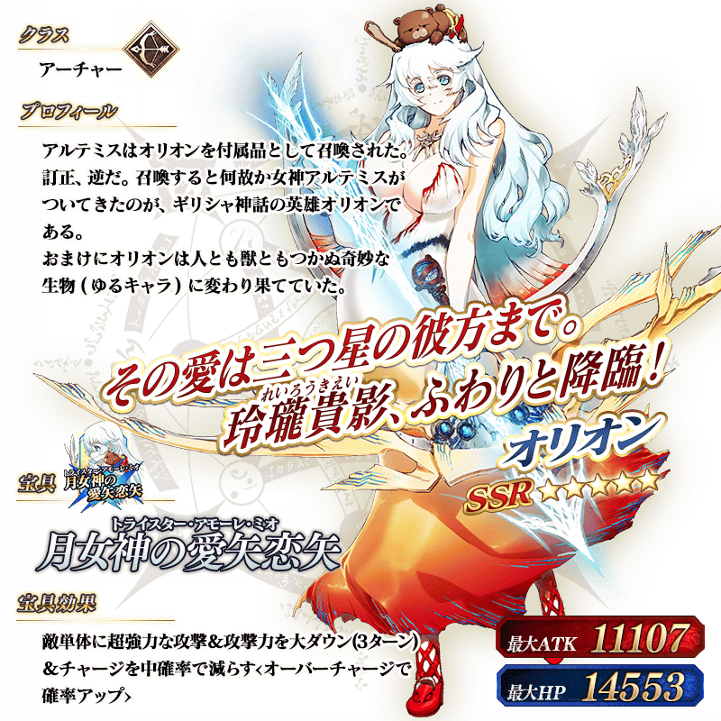 ※上述「★5(SSR)俄里翁」的立繪為靈基再臨第1階段。
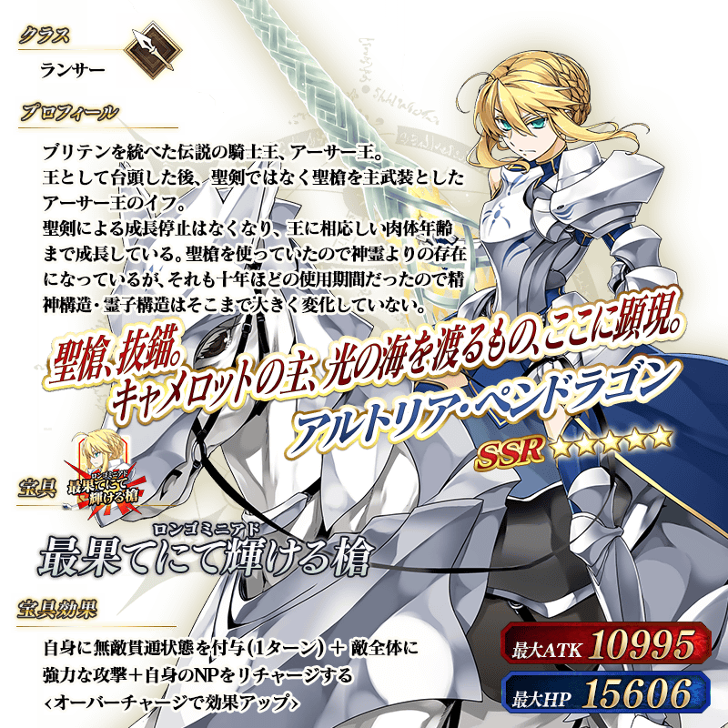 ※上述「★5(SSR)阿爾托莉亞・潘德拉剛(Lancer)」的立繪為靈基再臨第1階段。
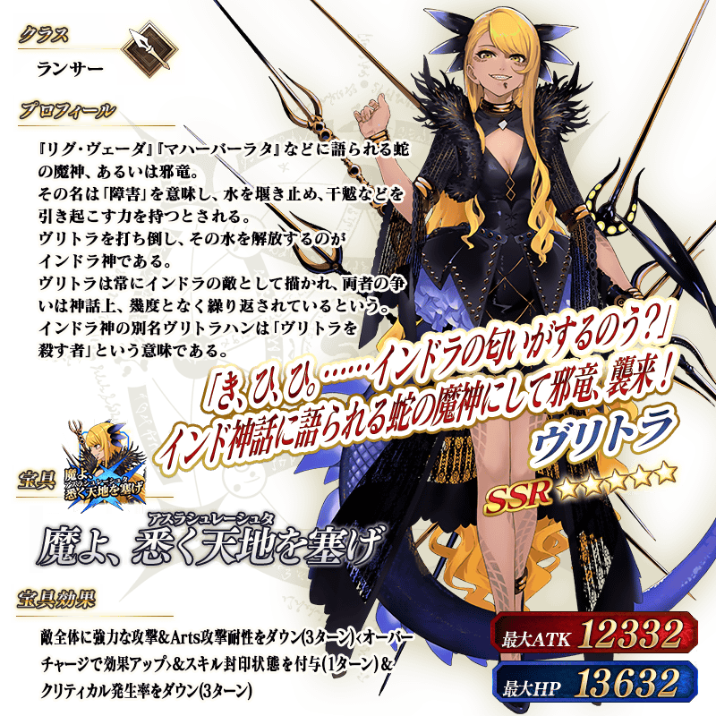 ※上述「★5(SSR)弗栗多」的立繪為靈基再臨第1階段。
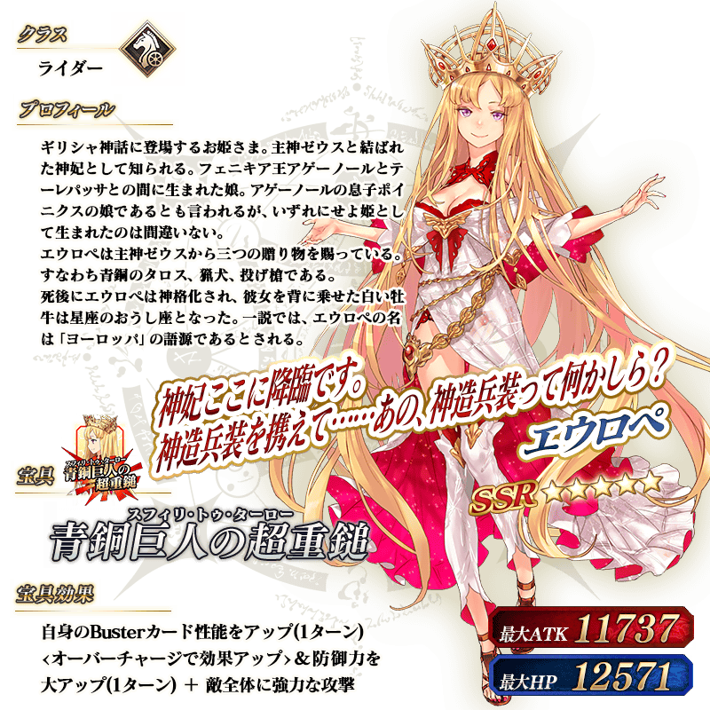
 ※上述「★5(SSR)魁札爾・科亞特爾(Rider)」的立繪為靈基再臨第1階段。
※上述「★5(SSR)魁札爾・科亞特爾(Rider)」的立繪為靈基再臨第1階段。


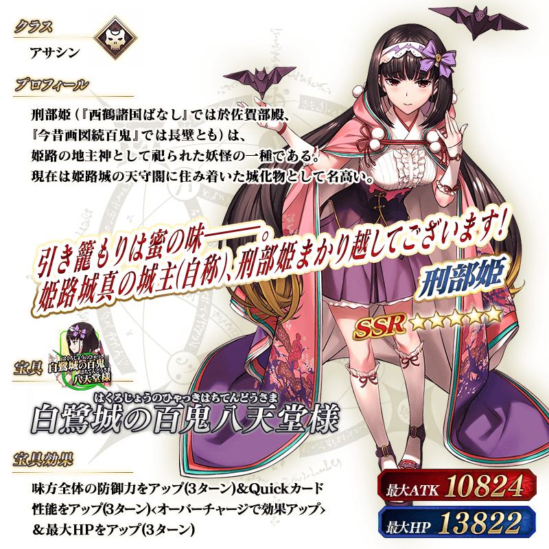 ※上述「★5(SSR)刑部姬(Assassin)」的立繪為靈基再臨第1階段。
 ※上述「★5(SSR)南丁格爾(Berserker)」的立繪為靈基再臨第1階段。
※上述「★5(SSR)南丁格爾(Berserker)」的立繪為靈基再臨第1階段。
 ※上述「★5(SSR)志度內」的立繪為靈基再臨第1階段。
※上述「★5(SSR)志度內」的立繪為靈基再臨第1階段。
 ※上述「★5(SSR)狄奧斯庫洛伊」的立繪為靈基再臨第1階段。
※上述「★5(SSR)狄奧斯庫洛伊」的立繪為靈基再臨第1階段。
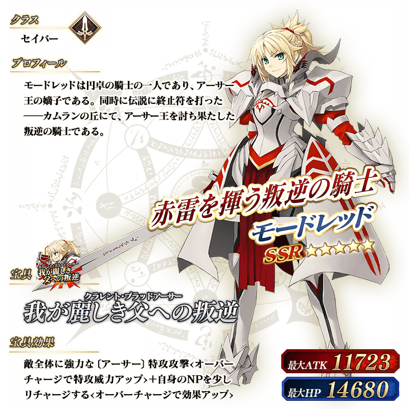 ※上述「★5(SSR)莫德雷德(Saber)」的立繪為靈基再臨第1階段。
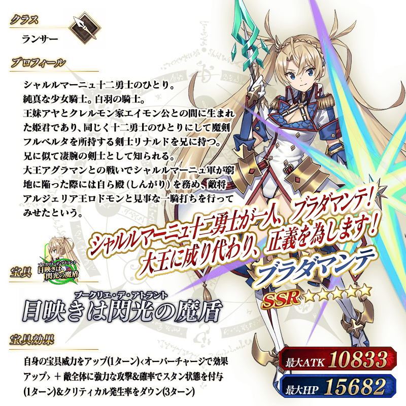 ※上述「★5(SSR)布拉達曼特」的立繪為靈基再臨第1階段。


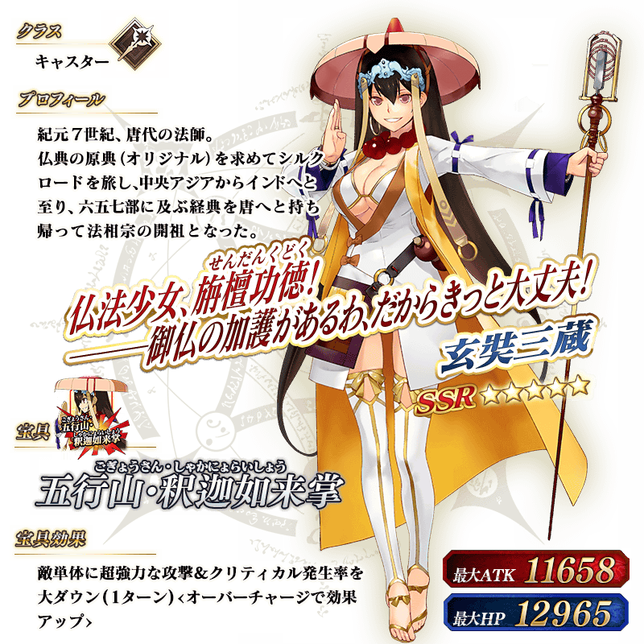
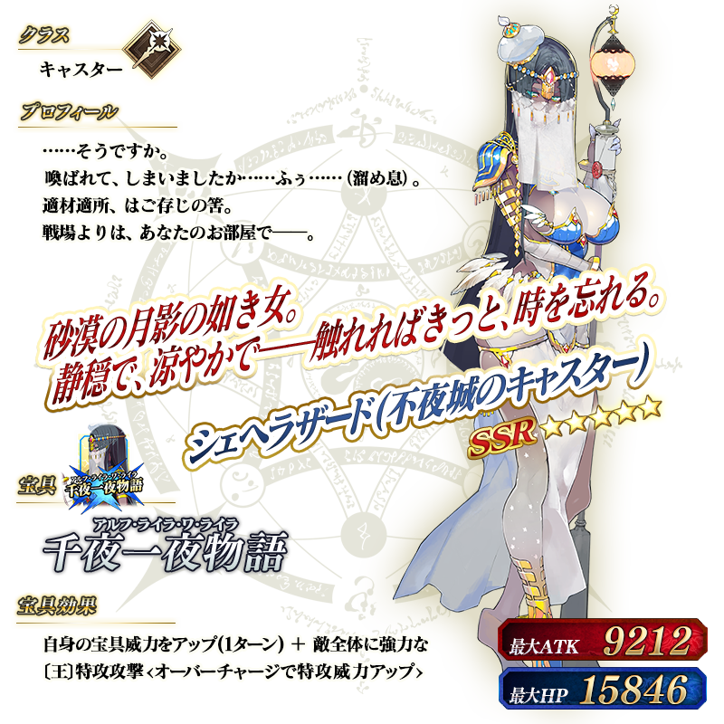
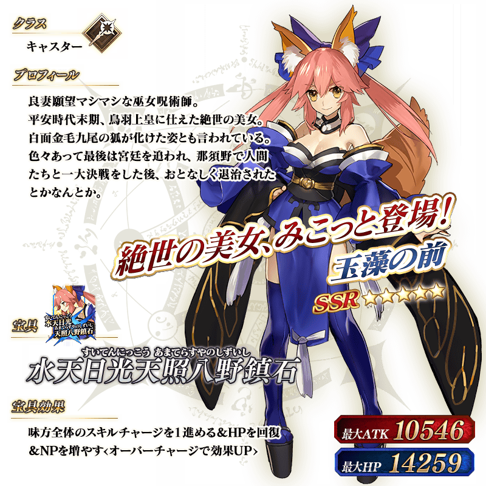
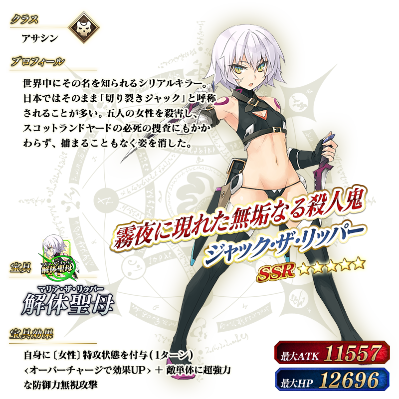 ※上述「★5(SSR)開膛手傑克」的立繪為靈基再臨第1階段。
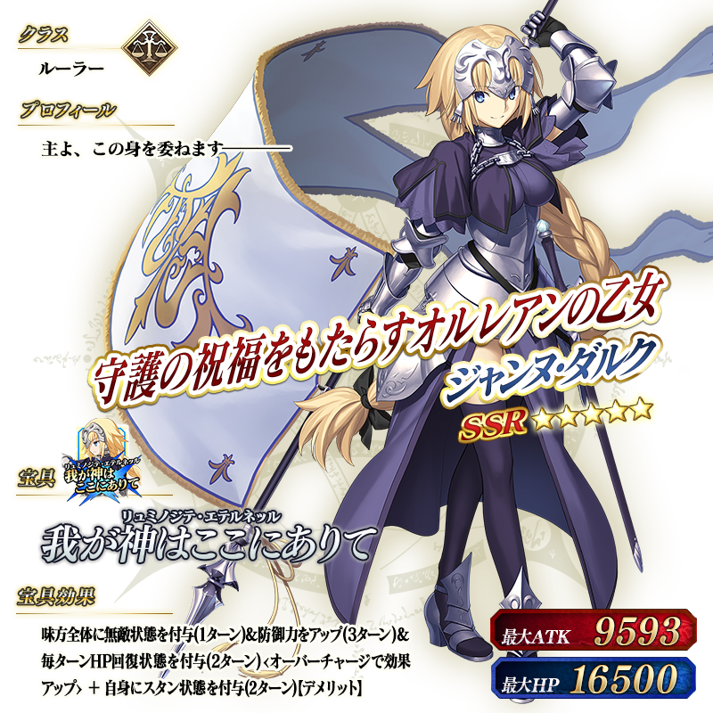 ※上述「★5(SSR)貞德(Ruler)」的立繪為靈基再臨第1階段。
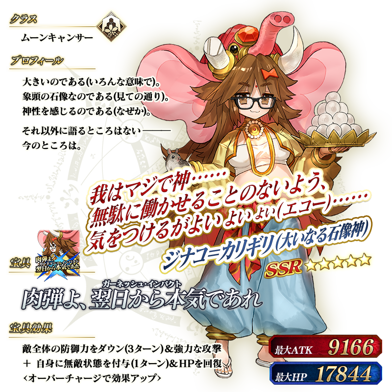 ※上述「★5(SSR)吉娜可＝加里吉利(偉大石像神)」的立繪為靈基再臨第1階段。 ※「★5(SSR)偉大石像神」到靈基再臨第2階段的話名稱會變成「★5(SSR)吉娜可＝加里吉利」。
介紹在本召喚Pick Up的11位從者寶具演出！
在「Fate/Grand Order」官方網站內的公告中，以影片公開寶具演出，敬請確認。
【★5(SSR)阿提拉(Saber)】
【★5(SSR)阿爾托莉亞・潘德拉剛(Saber)】
【★5(SSR)俄里翁】
【★5(SSR)阿爾托莉亞・潘德拉剛(Lancer)】
【★5(SSR)弗栗多】
【★5(SSR)歐羅巴】
【★5(SSR)魁札爾・科亞特爾(Rider)】
【★5(SSR)安娜塔西亞】
【★5(SSR)刑部姬(Assassin)】
【★5(SSR)南丁格爾(Berserker)】
【★5(SSR)志度內】
介紹在本召喚Pick Up的11位從者寶具演出！
在「Fate/Grand Order」官方網站內的公告中，以影片公開寶具演出，敬請確認。
【★5(SSR)狄奧斯庫洛伊】
【★5(SSR)莫德雷德(Saber)】
【★5(SSR)布拉達曼特】
【★5(SSR)女王梅芙(Rider)】
【★5(SSR)弗朗西斯・德雷克】
【★5(SSR)玄奘三藏】
【★5(SSR)雪赫拉莎德(不夜城的Caster)】
【★5(SSR)玉藻前(Caster)】
【★5(SSR)開膛手傑克】
【★5(SSR)貞德(Ruler)】
【★5(SSR)吉娜可＝加里吉利(偉大石像神)】
【2月10日(三) 17:00追記】
其他還有，期間限定活動「愛的傳教士埃莫醬的聖瓦倫蒂諾！ ～迦勒底・苦澀・情人節2021～」同時舉辦！
關於詳情，請自下述橫幅確認。
■「愛的傳教士埃莫醬的聖瓦倫蒂諾！ ～迦勒底・苦澀・情人節2021～」詳細情報

※2月10日(三) 17:00圖片更新